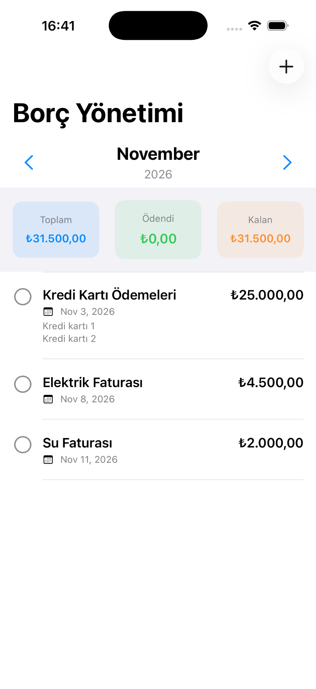
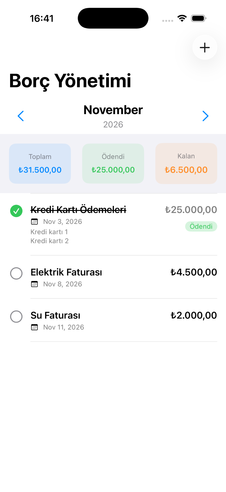
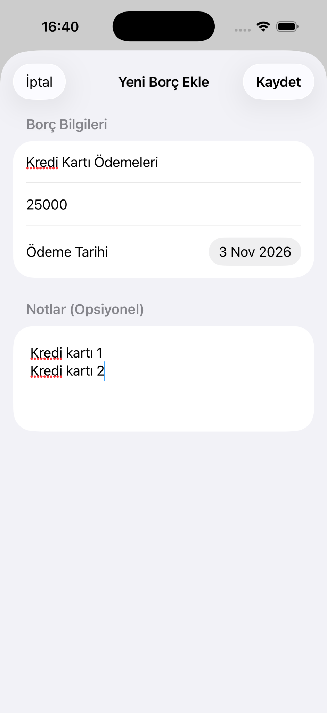
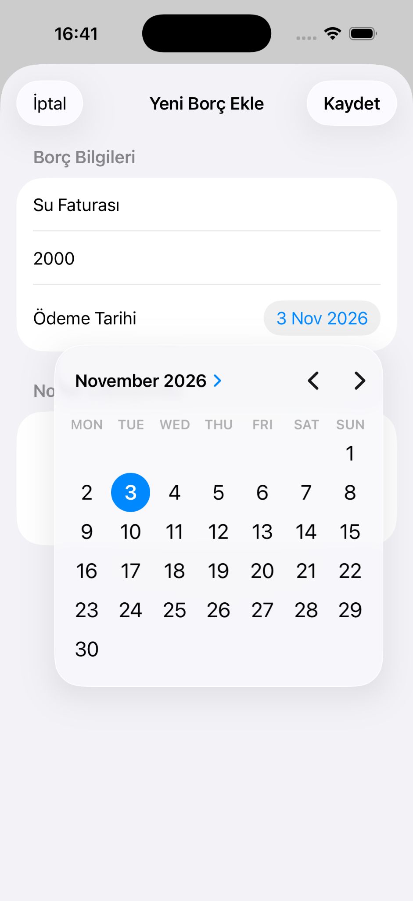
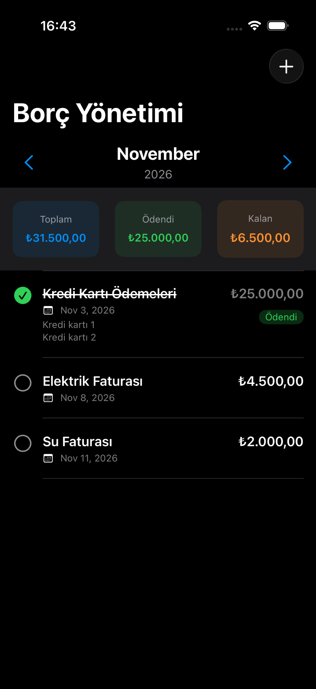
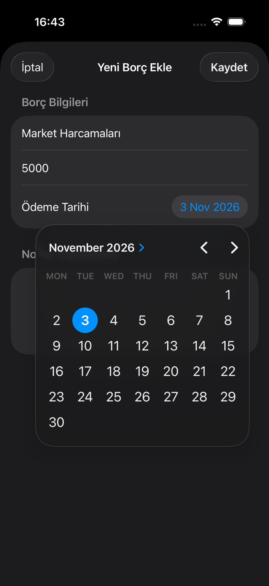
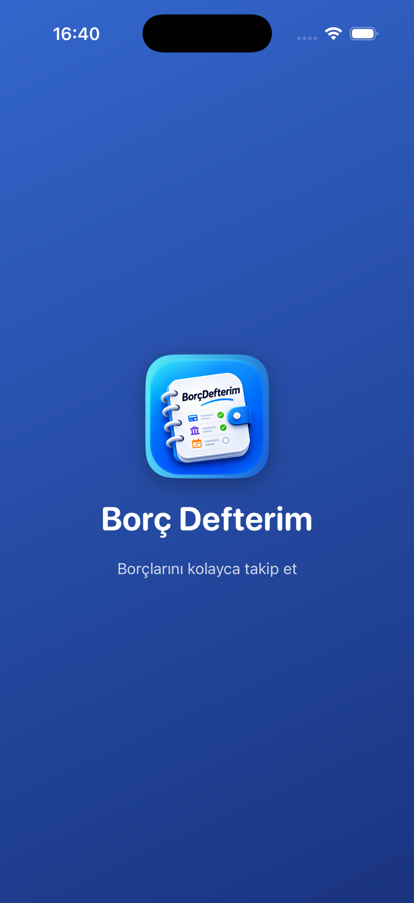

Kolay borç ekleme
Başlık, tutar, ödeme tarihi ve isteğe bağlı notlarla kayıt oluştur.
Borçlarını kaydet, ödeme tarihlerini belirle ve aylık durumunu tek ekrandan gör.
iPhone için geliştirildi.
Başlık, tutar, ödeme tarihi ve isteğe bağlı notlarla kayıt oluştur.
Toplam, ödenen ve kalan tutarları bir arada görüntüle.
Ödediğin borçları işaretle; kalan tutarı kolayca takip et.
Takvimden borçlarının ödeme tarihini seç.
Farklı aylara ait borçlarını görüntüle.
iPhone'un görünümüne uyumlu arayüzün keyfini çıkar.







Soruların, önerilerin ve uygulamayla ilgili destek taleplerin için bize ulaş.
Destek sayfasını ziyaret et